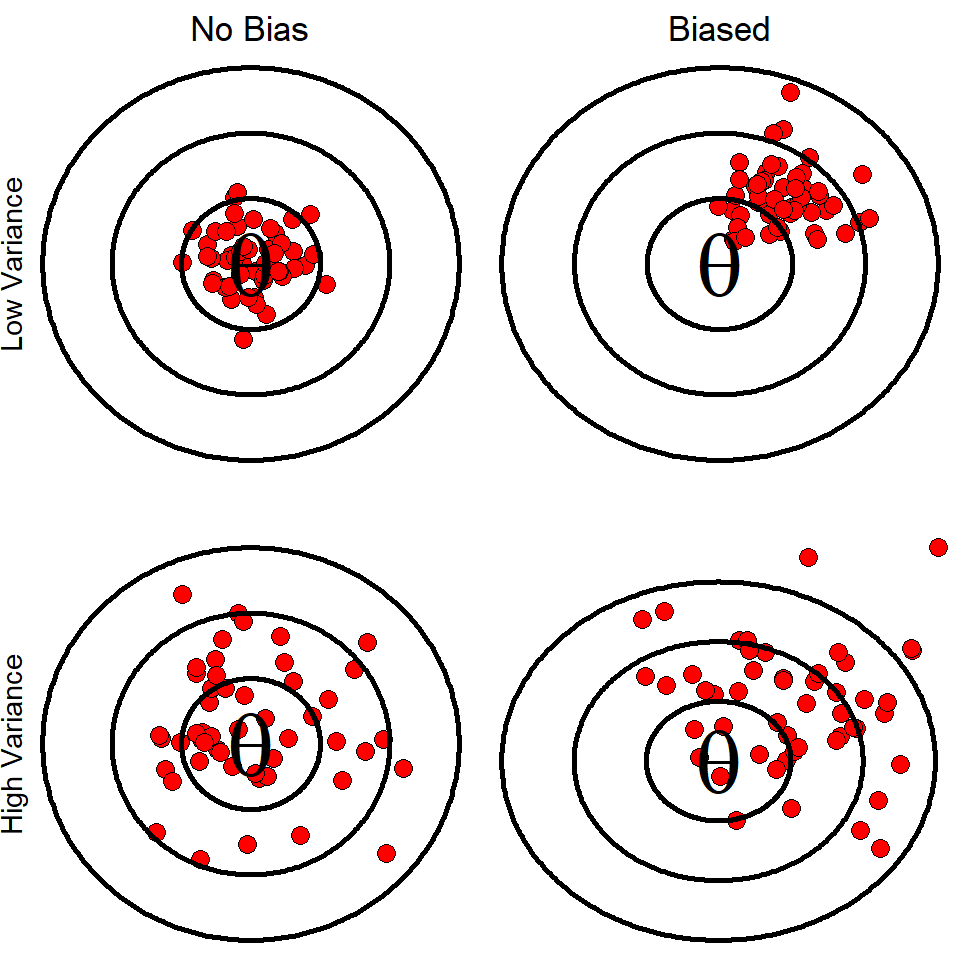
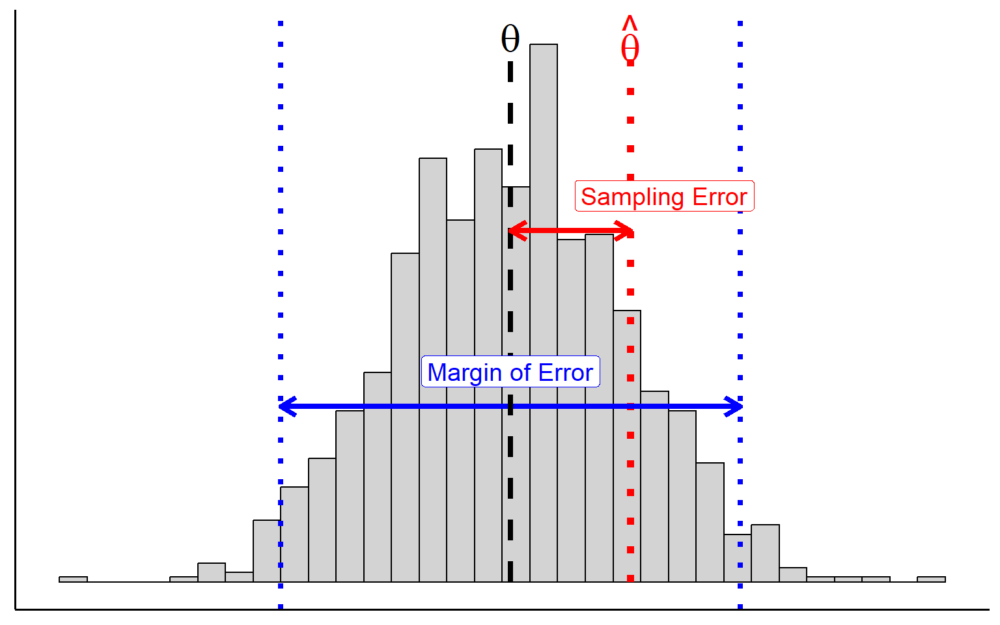
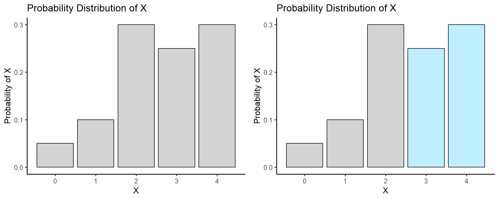

Week 6 Notes
STAT 251 Section 03
Lecture 10: Monday, Feb.12th 2024
Sources of Bias In Surveys
Last Friday, we introduced the idea of randomization as a means of selecting a sample from the population through a sampling design called Simple random sampling. Using random numbers to select individuals that are selected to be in the sample are representative of the true population. However, large surveys of the human population require more than just sampling design with randomization.
A good survey needs an accurate sampling frame for the population, which is rarely the case in surveys of large human populations. As a result, most surveys suffer from undercoverage - bias that is introduced from having an inaccurate sampling frame. For example, consider a survey of American households. Such a survey will not include homeless individuals, college students, or incarcerated persons. Thus population surveys usually have some degree of bias introduced by the individuals not included by the sampling frame.
Other sources of bias in surveys include:
Nonresponse bias - this is a more serious form of bias that occurs when individuals selected to be in the sample cannot be contacted or refuse to participate.
For many sample survey’s nonresponse bias is a considerable issue reaching \(50\%\) or more of selected individuals.
nonresponse bias is typically higher in urban areas
An important thing to keep in mind is that nearly all political and opinion polls reported in the news fail to report their nonresponse rates.
Response bias - response bias occurs when the interview portion of a survey influences how individuals respond to the survey questions. Response bias can include:
Poorly worded questions which may confuse respondents and influence how they select their answer.
Questions about sensitive topics, such as illict drug use, in which respondants may lie about their behavior.
The race or sex of the interviewer can influence responses related to questions about race relations or feminism.
More Complicated Sampling Designs
Systematic sampling – A random sampling method in which the researcher selects every \(k^{th}\) subject from an ordered sampling frame
This method of sampling is useful when there is no sampling frame available.
Estimates obtained under this sampling design typically have a lower margin of error than simple random sampling and some cluster sampling designs.
Cluster sampling – A type of sampling method in which the population is divided in a set of clusters and the researcher selects a simple random sample of the clusters. The sample then comprises all subjects in the selected clusters.
The advantages of cluster sampling are that (a) it can be less expensive than simple or stratified random sampling and (b) it can be used when a sampling frame is unavailable
A disadvantage of cluster sampling is that the margin of error is often larger than what it would be for simple random sampling or stratified random sampling
Stratified random sampling – A type of sampling method in which the population is separated into groups, call strata, based on some characteristic about the subjects. A simple random sample is then taken from each stratum.
Administrative convenience - It may be easier to conduct several smaller simple random sampling designs than coordinate one larger simple random sampling design.
Interest in individual strata - The design ensures samples from all strata. A simple random sampling design might sample few or no elements from a stratum of interest.
Smaller margin of error - By assuring samples from each strata, the combined sample tends to be more representative of the population, resulting in a smaller margin of error

Two – stage cluster sampling - A type of
sampling method in which the population is divided into a set of
clusters and the researcher selects a simple random sample of the
clusters. A simple random sample is then applied to each cluster
Same advantages as cluster sampling
Usually has a smaller margin of error, because we can control two sample sizes: the number of clusters to sample, and the number of elements to sample from each sampled cluster

Ethical studies
Producing and using data to answer statistical questions may not seem like a big deal, but, like all human endeavors, it raises ethical concerns. The most prominent ethical issues arise when we collect data about people. Ethical considerations must be closely contemplated when we conduct experiments using human subjects. While an experiment may have potentially life saving benefits, it can also come with considerable risks that are bore solely by the participating subjects. Some ethical considerations that apply to any study are:
Informed consent - subjects participating in a survey or experiment are usually required to provide legal consent before data can be collected
Confidentiality - many studies on human subjects require that the data gather be kept confidential with proper security infrastructure in place to protect it.
- Can you think of some examples of areas of study that may require confidentiality or informed consent?
The University of Idaho, like all colleges and universities engaged in research, have a review board who is responsible for establishing ethics guidelines for conducting research and review studies which may require ethical considerations. The University of Idahos Office of Research Assurances website can be found here
The following link from the Environmental Systems Research Institute, inc website provides a great overview of the survey ethics, design and implementation.
Similarly, this link from the National Institutes of Health provides a brief overview of the guiding principles of ethical research.
Connection with statistical inference
Now that we have learned some different ways to conduct experimental studies and surveys, how does this connect with our ultimate goal of inferring things about a population, or making informed decisions? Recall that a sampling distribution is the distribution of a statistic that arises from taking all possible samples of the same size \(n\) from the same population.
If we think of the population parameter \(\theta\) as the bullseye of a target, then, ideally we would like our estimator \(\hat{\theta}\) to fall close to or on the value of \(/theta\). However, how we sample or conduct an experiment can influence the shape, center, and spread of the sampling distribution of a statistic.
Bias of a statistic - concerns the center of a sampling distribution. A statistic is unbiased if the mean of its sampling distribution is equal to the true value of the population parameter.
Variability of a statistic - concerns the spread of its sampling distribution. The spread is determined by the sampling design and the sample size \(n\). Larger sample sizes have smaller spreads.

The variation between samples means that estimates or values of a statistic are doomed to depart somewhat from the true population parameter simply by chance. The chance difference is called sampling error – which is how close our estimate is from the true population parameter
- Sampling error should not to be confused with the margin of error which is the maximum error that we might observe

So why worry about sampling design?
randomization guarantees that the results we get from analyzing our data follow the laws of probability.
Things like surveys and experiments cost precious resources like money, time, and effort. So when we estimate a population parameter, we want our estimate to be as precise as possible - i.e we want the margin of error to be as small as possible.
Under a randomized experiment or survey, we can reduce variability in the sampling distribution of a statistic by simply selecting a larger sample size. In fact, we can make the sampling error as small as we would like or at least as small as our bank accounts will allow!
- And we can often further reduce variability in our estimate by choosing a design that accounts for things like subject or sample heterogeneity.
Lecture 11: Wednesday, Feb.14th 2024
Introduction to probability
The reasoning of statistical inference relies on asking “how often would this method give the correct result if I used it many times?”. When we produce data by random sampling or through randomized experiments, the outcomes of our analysis are determined by the rules of mathematical probability.
Tossing a coin, rolling a die, the weather, the change in stock market, or choosing a simple random sample, these are all random phenomena because their results cannot be predicted with \(100\%\) accuracy each time. However, for each random phenomena there will be predictable patterns in the results. This is the basis of the idea of mathematical probability. An important note is that probability describes only the long-term frequencies or patterns of events. It is much less useful for quantifying the chance outcomes of events in the short term.
The language of probability
Probability is a measurement of the “likelihood” of an event as a number between 0 and 1. It describes the long-term frequency with which an event might occur. For example, we describe the probability of flipping a coin and getting heads as the number 0.5 or \(50\%\) which is the long-term frequency of heads or many repeated flips.
An event is any possible outcome of a random phenomena or experiment. For example, the events that might occur when flipping a coin are getting heads or tails.
The act of flipping a coin once is called a random trial - a process or experiment that has a set of well – defined possible outcomes. What distinguishes it as random is that there is more than one possible outcome e.g heads OR tails. What are the possible outcomes of rolling a single six-sided die?
We call the set of all possible outcomes of random phenomena the sample space. It is common in probability theory to use capital \(S = \{\}\) to denote the sample space mathematically. For example, the sample space of flipping a coin once is \(S = \{\text{Heads}, \text{Tails} \}\). The sample space of a single roll of a fair six-side die is \(S = \{1,2,3,4,5,6\}\).
as a general rule, the probability of an event \(A\) denoted \(P(A)\) is:
\[ P(A) = \frac{\text{Number of ways $A$ can happen}}{\text{Total number of outcomes}} \]
The denominator in the fraction above is the sample space and the numerator represents the fraction of the sample space that includes \(A\)
Consider rolling a fair single six-sided die. What is the probability that you would roll the number six? What is the probability that you would not roll a six?. Knowing that the die is fair tells us that each number has an equal probability of occurring. Thus rolling any particular number on the die has a probability of \(1/6 = 0.167\) and the probability of rolling any number but a six has to be \(1-(1/6) = 5/6 = 0.833\). This simple example demonstrates several of the rules of probability:
- \(0\leq P(A)\leq 1\) - This rule states that a valid probability must be a value between zero and one.
- \(\sum_{i\in S} P(A_i) = 1\) - This rule states that the probability of the entire sample space must be one.
- \(P(A \cup B ) = P(A)+P(B)\) - The two events \(A\) and \(B\) are said to be disjoint if they have no outcomes in common and so can never occur together. For two disjoint events \(A\) and \(B\), the probability that either event occurs is the sum of their individual probabilities. This is sometimes referred to as the addition rule for disjoint events.
- \(P(A') = 1-P(A)\) - This rule states that the probability of the complement of an event \(A\) is one minus the probability of the event \(A\). The symbol \(A'\) means complement of \(A\) or “\(A\)-not” and means a number or quantity required to make a group whole. This is often referred to as the complement rule.
Example: A standard deck of \(52\) playing cards contains cards from four suits: hearts, diamonds, clubs, and spades. Each suit consists of 13 cards: an Ace, the cards with the numbers 2-10, a jack, a queen and a king card. Suppose you are playing a hand of poker and the dealer is about to deal everyone their first card. What is the probability that the card you are dealt is not a queen?
- the probability that the card is a queen is \(4/52\) because there are four suits and each has one queen. Thus using rule three above we can conclude that the probability of NOT being dealt a queen card is \(1-\frac{4}{52} = \frac{48}{52}\).
Dealing with multiple events
We are often interested in the probability of more than one event occurring simultaneously. The language of probability gives us tools to deal with outcomes of multiple events. A union of two or more events is that probability that one or both events occur. If the events are disjoint then we can use rule \(3\) above. If the events have outcomes in common then we must be sure not to double count the probability of their overlap. For two non-disjoint events \(A\) and \(B\):
\[ P(A\cup B) = P(A)+P(B)-P(A\cap B) \]
This is the addition rule for non-disjoint event. The quantity \(P(A\cap B)\) is called the intersection of events \(A\) and \(B\) and represents the fraction of the sample space that \(A\) and \(B\) have in common. In general, the intersection of two independent events is the probability that both events occur:
\[P(A\cap B) = P(A)\cdot P(B) \]
This is called the multiplication rule independent events. If two events are disjoint then their intersection is the empty set \(P(A\cap B) = \emptyset\) and they are said to be mutually exclusive.
To illustrate this consider the following example: Some states are considering laws that will ban the use of cell phones while driving because they believe that the ban will reduce the number of phone-related accidents. One study classified these types of accidents by the day of the week when they occurred . For this example, we will use the values from this study as our probability model. Here are the probabilities
| Day | Probability |
|---|---|
| Sun. | 0.03 |
| Mon. | 0.19 |
| Tues. | 0.18 |
| Wed. | 0.23 |
| Thurs. | 0.19 |
| Fri. | 0.16 |
| Sat. | 0.02 |
What is the probability that an accident occurs on a weekend, that is on Saturday or Sunday?
\[ P(\text{Saturday or Sunday}) = P(\text{Saturday})+P(\text{Sunday}) = 0.02+0.03 = 0.05 \]
what is the probability that an individual gets into an accident on Friday and again on Monday?
\[ P(\text{Friday and Monday}) = P(\text{Friday})\cdot P(\text{Monday}) = 0.16\cdot 0.19 = 0.03\]
again it is important to note that the intersection above assumes that the accidents on Friday and Monday are independent events. Two events are said to be independent if knowing that one event occurs does not change the probability of the other event occurring. To relate to the example above, we are assuming that getting in an accident on Friday does not change the probability that an individual gets into an accident on Monday.
Where do probabilities come from?
Think back to flipping a fair coin a single time, what is the probability that we get “heads”? Our intuition tells us that it is going to be \(1/2\) if we have an equal chance of getting heads or tails, but how can we be sure that this is the likelihood of getting heads? Suppose that we flip a fair coin and it comes up tails, does this mean our intuition was wrong?
Now imagine flipping a coin 4 times. We expect to see half of the flips be heads and half of the flips tails. However, we might see heads come up 3 times and tails once. The proportion of times we see heads is now \(75\%\) which is much greater than our expectation of \(50\%\).
In both cases, the result defied our expectation but this is because the outcome of any small number of trials can vary quite different from our expectations. Imagine flipping a coin \(10,000\) times. The result would be a proportion of heads very close to \(0.5\). As we stated earlier, with random phenomena, the proportion of times that an event happens can be quite unpredictable in the short run, but very predictable in the long run. Thus probabilities quantify the “long-run” behavior or frequency of a particular event.
This long-run behavior is established by a property of mathematical probability called the Law of Large Numbers (LLN). The LLN states that the relative frequency of an event will tend to “approach” (in some sense) the probability of an event as the number of independent observations increases
Figure: A demonstration of the Law of Large Numbers. The plot above represents the running proportion of fair coin flips that come up heads for a large number of repeated independent trails. The red line indicates the expected proportion of \(P(Heads) = 0.5\)
One assumption that we made in the coin flip example was that the trials were independent trials. This means that the outcome of one flip of the coin did not depend on the outcome of a previous flip.
Lecture 12: Wednesday, Feb.16th 2024
The sample space of a random process can consist of numbers such as the numbers on a six-sided die or qualitative values such as getting heads or tails from tossing a coin. However in statistics we typically deal with numerical outcomes such as the number of heads in a small number of tosses. When we record the outcomes of random process with numbers we get a random variable. We usually denote random variables with capital letters such as \(X\) or \(Y\).
Lets illustrate with an example: Suppose we toss a coin four times. We can record the outcome of the flips as a string of letters with \(H\) representing heads and \(T\) representing tails. The sample space of this event then consists of all possible permutations of four letter sequences of \(H\)s and \(T\)s (there are 16 total).
\[S = \{ \text{HHHH}, \ \text{HTHH}, \ \text{HHTH}, ... \} \]
Let \(X\) be the number of heads in four flips of coin. If the sequence we observe is \(HHTH\), then \(X = 3\). If the sequence is \(HTTH\), the \(X = 2\). The possible values of \(X\) are \(\{ 0, 1, 2, 3, 4 \}\). Thus flipping a coin four times will give \(X\) one of these possible values.
- The mathematical definition of a random variable is a function that maps from the sample space of an event to the real number line \(X: S \rightarrow \mathbb{R}\)
Just like other variables, a random variable can be discrete or continuous and can be described by a distribution. The distribution of a random variable is called a probability distribution. A probability distribution is a function which assigns probabilities to different outcomes of a random variable.
Discrete random variables and their distributions
Discrete random variables have a countable number of outcomes. The distribution of discrete random variable is called a discrete probability distribution and consists of the possible outcomes and their probabilities. Often a discrete probability distribution can be represented as a table
| Value of X | Probability |
|---|---|
| \(x_1\) | \(p_1\) |
| \(x_2\) | \(p_2\) |
| \(x_3\) | \(p_3\) |
| \(\cdots\) | \(\cdots\) |
| \(x_k\) | \(p_k\) |
A probability distribution must adhere to the rules of probability that we saw previously.
Every probability \(p_i\) must be a number between 0 and 1.
The sum of all probabilities for all outcomes of \(X\) must add to one: \(\sum_i p_i = 1\)
To find the probability of an event, we can simply add up the probabilities of the particular values of \(X\) that make up that event.
- Example: Consider the following probability distribution giving the probabilities of getting various grades on a STAT 251 exam. The students grade on a four point scale with \(F = 0\), \(D =1\), \(C = 2\), \(B = 3\) and \(A =4\) is a random variable.
| X | Probability |
|---|---|
| 0 | 0.05 |
| 1 | 0.10 |
| 2 | 0.30 |
| 3 | 0.25 |
| 4 | 0.30 |
Suppose a STAT 251 student is selected at random, what is the probability that the student score higher than a \(C\) on the statistics exam? To choose at random means to give each student an equal probability of being selected. The probability that the student has an exam score higher than a \(C\) is \(P(X> 2)\). This is the same as asking what is the probability that \(X = 3\) or \(X = 4\). Thus we can simply add the probabilities of these events such that \[P(X > 2) = P(X = 3)+P(X = 4) = 0.25+0.3 = 0.55\]
We can use a histogram to display a probability distribution just like we could when displaying the distribution of data. Consider the histogram for the probability distribution of statistics exam scores

The bars of histogram for a discrete probability distribution should add to one. In the plot on the the right the blue bars represent the probability that a student gets higher than a \(C\) on the exam i.e \(P(X > 2)\)
We can generalize the probability that \(X\) is greater than some set of outcomes by summing individual probabilties of the relevant events:
\[ P(X > a) = \sum_{x > a} P(X = x) = 1 - P(X\leq a) \]
Applying this equation to the example of student exam scores, we could have computed the probability that a student gets higher than a \(C\) by computing the complement event
\[P(X > 2) = 1 - P(X\leq 2) \] \[= 1 - \sum_{x \leq 2} P(X) \] \[= 1-(0.05+0.10+0.30)\] \[= 0.55 \]
We can summarize the probability that we observe a value of \(X\) across a particular interval \((a, b)\) by summing up the probabilities of each outcome of \(X\) within that interval:
\[ P(a\leq X \leq b) = \sum_{a\leq x\leq b} P(X = x) \]
Mean and standard deviation of discrete random variables
The mean of a discrete random variable is
\[\mu = \sum_{x} xP(x) \]
where \(x\) denotes a given outcome of the random variable \(X\) and \(P(x)\) denotes the probability of that outcome. Note that the \(x\) below the summation sign here indicates that we sum over all possible values of \(X\).
- The mean of a random variable is also called its expected value. However this term can be misleading as we don’t necessarily expect an observation of a random variable to be close to its expected value.
The variance of a discrete random variable is
\[\sigma^2 = \sum_{x} (x - \mu)^2 P(x)\]
The standard deviation of a discrete random variable is
\[ \sigma = \sqrt{\sigma^2} = \sqrt{\sum_{x} (x - \mu)^2 P(x)} \]
Example: Consider the following probability distribution for the random variable \(X\) which denotes the number of spelling errors committed per minute of typing by a professional typist
| Value of X | Probability |
|---|---|
| 0 | 0.3 |
| 1 | 0.4 |
| 2 | 0.2 |
| 3 | 0.1 |
Compute the mean number of typing errors per minute of typing \[ \mu = (0\times 0.3 + 1\times 0.4 + 2 \times 0.2 + 3\times 0.1) = 1.1\]
Compute the variance in typing errors per minute of typing
\[ \sigma^2 = \left[(0-1.1)^2\times 0.3 + (1-1.1)^2\times 0.4 + (2-1.1)^2 \times 0.2 + (3-1.1)^2\times 0.1\right] = 0.89\]
Compute the standard deviation in typing errors per minute of typing
\[ \sigma = \sqrt{0.89} = 0.94\]
Deriving sampling distributions
Two important probability distributions we encounter often in the statistics are the population distribution of a random variable and the sampling distribution of a statistic
The population distribution is the probability distribution for the outcomes of a random variable
The sampling distribution is the probability distribution for a statistic
For a discrete random variable, the sampling distribution of a statistic can be derived through the following steps:
Enumerate all possible samples of size \(n\) that can be drawn from the population. For each sample, calculate the sample mean, sample variance, or any other relevant statistic of interest.
Determine the probability associated with each possible sample statistic. This involves using the population distribution to calculate the probability of obtaining each value of the sample statistic.
Assemble the probabilities for each sample statistic to create the sampling distribution. This distribution describes the probabilities of observing different values of the sample statistic across all possible samples of size \(n\).
Example: Texas hold’em is a gambling game which starts with each player recieving two cards. Here is the population distribution for the number of aces delt in a two-card hand
\[X = \text{Number of aces in a hand of poker} \]
| X | Probability |
|---|---|
| 0 | 0.56 |
| 1 | 0.38 |
| 2 | 0.06 |
Derive the sampling distribution for the proportion of aces in two consecutive hands of texas hold’em. To derive the sampling distribution we must define the sample space for the proportion of aces in two hands. The possibilities are given below
| Number of Acs in two hands | Outcomes giving result | Probability |
|---|---|---|
| 0 | \((0,0) = \color{red}{1}\) | \(0.559\times 0.559 = \color{red}{0.312}\) |
| 1 | \((0,1), (1,0) = \color{red}{2}\) | \(2(0.559\times 0.382) = \color{red}{0.427}\) |
| 2 | \((0, 2), (2,0), (1,1) = \color{red}{3}\) | \(2(0.559\times 0.059) + (0.382\times 0.382) = \color{red}{0.212}\) |
| 3 | \((1,2), (2,1) = \color{red}{2}\) | \(2(0.382\times 0.059) = \color{red}{0.045}\) |
| 4 | \((2,2) = \color{red}{1}\) | \(0.059\times 0.059 = \color{red}{0.003}\) |
Therefore we can summarize the distribution of the proportion \(\hat{p}\) of Aces in two hands of texas hold’em
| \(\hat{p}\) | \(P(\hat{p})\) |
|---|---|
| 0 | 0.312 |
| 1 | 0.427 |
| 2 | 0.382 |
| 3 | 0.045 |
| 4 | 0.003 |
Example Consider the probability distribution of the random variable \(X\). Let \(X\) represent the number of Coho salmon caught in an afternoon by a fly fisherman fishing the Clearwater river.
| X | Probability |
|---|---|
| 0 | 0.59 |
| 1 | 0.23 |
| 2 | 0.18 |
Derive the sampling distribution for the mean number of fish caught from a random sample of \(n = 3\) afternoons of fishing
| Mean Number of Salmon Caught | Outcomes giving result | Probability |
|---|---|---|
| 0.00 | \((0,0,0) = \color{red}{1}\) | \(0.589^3 = \color{red}{0.204}\) |
| 0.33 | \((1,0,0), (0,1,0),(0,0,1) = \color{red}{3}\) | \(3(0.589^2\times0.232) = \color{red}{0.241}\) |
| 0.67 | \((1,1,0), (1,0,1), (0,1,1), (2,0,0), (0,2,0),(0,0,2) = \color{red}{6}\) | \(3(0.232^2\times0.589) + 3(0.589^2\times 0.179) = \color{red}{0.281}\) |
| 1.00 | \((1,1,1), (2,1,0), (2,0,1), (0,2,1), (1,2,0), (1,0,2), (0,1,2) = \color{red}{7}\) | \(0.232^3 + 6(0.589\times 0.232\times 0.179) = \color{red}{0.159}\) |
| 1.33 | \((2,1,1), (1,2,1), (1,1,2), (2,2,0), (2,0,2),(0,2,2) = \color{red}{6}\) | \(3(0.232^2\times0.179) + 3(0.179^2\times 0.589) = \color{red}{0.085}\) |
| 1.67 | \((1,2,2), (2,1,2),(2,2,1) = \color{red}{3}\) | \(3(0.179^2\times0.232) = \color{red}{0.022}\) |
| 2.00 | \((2,2,2) = \color{red}{1}\) | \(0.179^3 = \color{red}{0.006}\) |
Therefore we can summarize the distribution of the proportion \(\bar{X}\) of Aces in two hands of texas hold’em
| \(\bar{X}\) | \(P(\bar{X})\) |
|---|---|
| 0.00 | 0.204 |
| 0.33 | 0.241 |
| 0.67 | 0.281 |
| 1.00 | 0.159 |
| 1.33 | 0.085 |
| 1.67 | 0.022 |
| 2.00 | 0.006 |